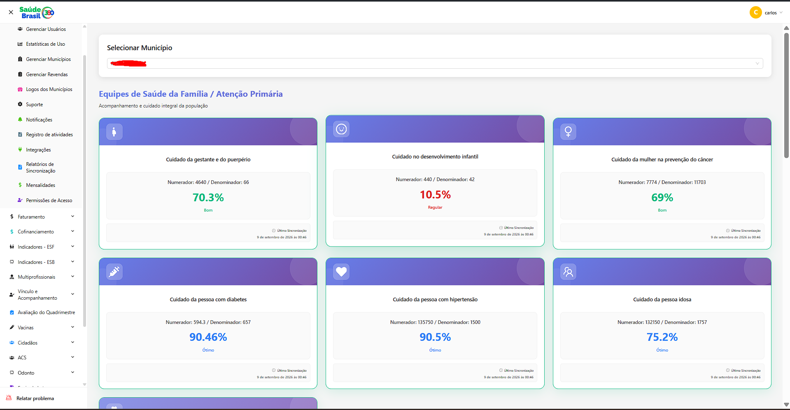
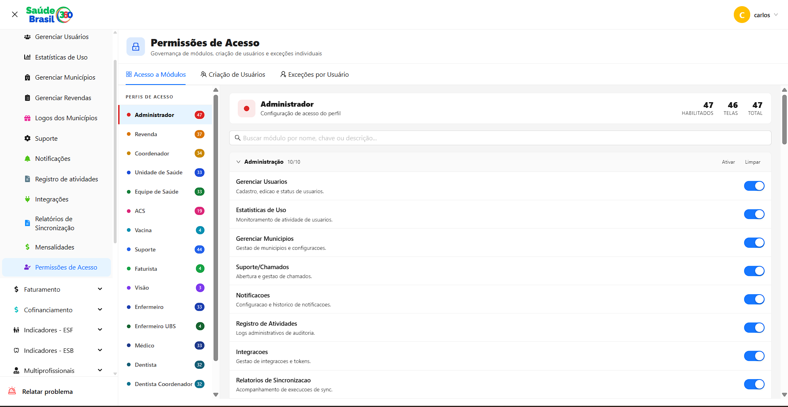
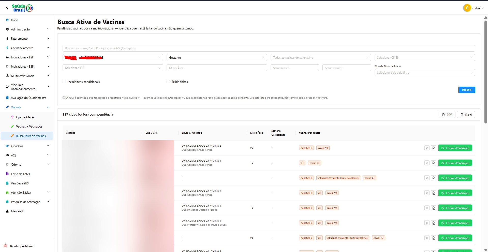
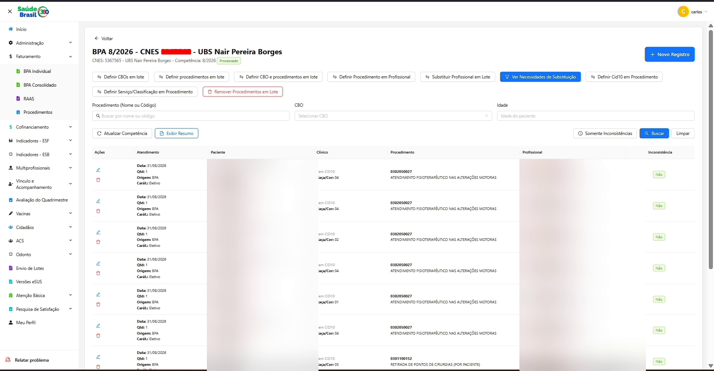
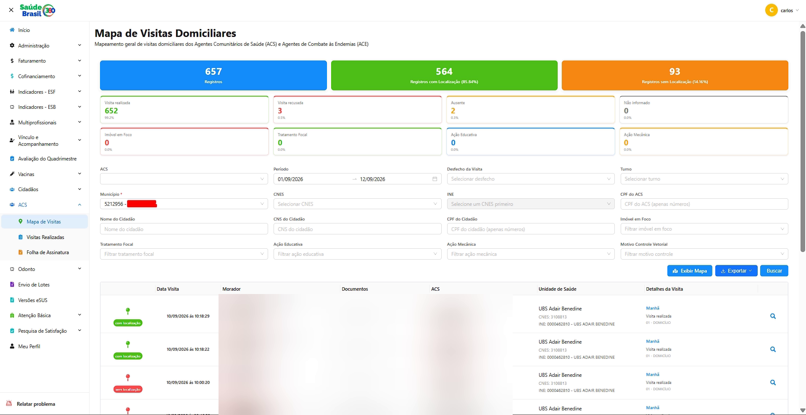
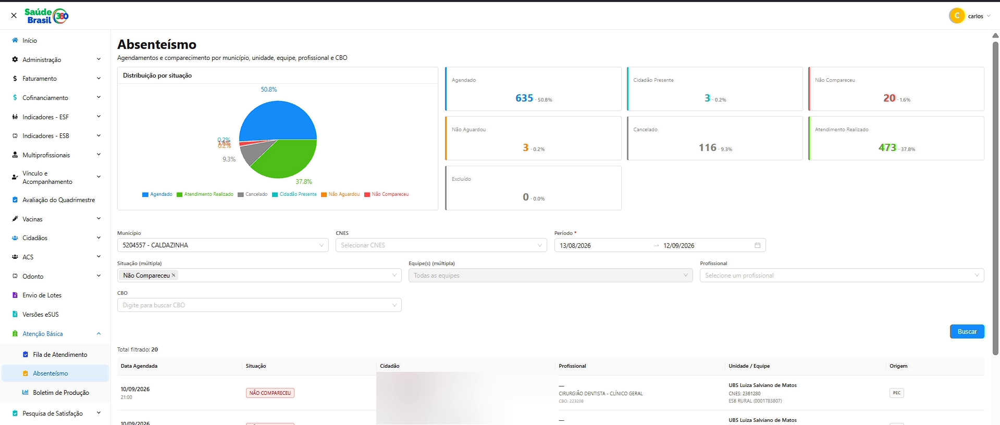

O problema
O financiamento federal da Atenção Primária (Previne Brasil) depende de indicadores que o município precisa calcular, comprovar e atingir. O dado existe — está espalhado no prontuário eletrônico de cada equipe — mas chega ao gestor tarde demais e agregado demais: um percentual fechado no fim do quadrimestre, quando não dá mais para corrigir, e que não diz quem precisa ser atendido.
O que foi construído
- Cálculo dos indicadores C1–C7 da Atenção Primária conforme a nota metodológica oficial do Ministério da Saúde
- Indicadores de Saúde Bucal (B1–B6), eMulti e cofinanciamento estadual
- Listas nominais para busca ativa — o agente sabe quem visitar hoje
- Geração de BPA e RAAS, os documentos oficiais de faturamento do SUS
- Acompanhamento parcial do quadrimestre, não só o resultado final
- Matriz de permissão por módulo com 15 perfis de usuário e restrição geográfica por município
Módulos
Mais de 30 módulos, do cálculo de indicador ao faturamento do SUS.
Indicadores
- Atenção Primária (C1–C7)
- Saúde Bucal (B1–B6)
- eMulti (M1–M2)
- Vínculo e acompanhamento territorial
- Componente III — qualidade
- Cofinanciamento estadual
Cidadãos e território
- Cadastro único de cidadãos
- Cadastros duplicados e unificação
- Integração CADSUS
- Gestantes de risco
- Idosos acamados
- Deficiências, etnias e Bolsa Família
- Controle de insulinas
- Mapa de visitas do ACS
Faturamento SUS
- BPA individual e consolidado
- RAAS por competência
- Tabela SIGTAP
Operação
- Atendimento nominal
- Atividade coletiva
- Absenteísmo
- Fila de atendimento
- Vacinas e busca ativa
- Encaminhamentos
- Próteses dentárias
Gestão e suporte
- Mensalidades e financeiro
- Chamados em kanban
- Notificações por WhatsApp
- Pesquisa de satisfação
- Certificados
- Assistente de IA
- Auditoria e permissões (RBAC)
Arquitetura
- Monorepo com frontend, API e um repositório de queries e normas metodológicas dos indicadores
- Organização feature-based nas duas pontas: cada módulo carrega suas próprias camadas (Routes → Controller → Service → Repository)
- Multi-tenant real: além do banco principal, o backend abre conexões dinâmicas por código IBGE para a base de e-SUS/PEC de cada prefeitura
- Snapshots versionados por município e competência — o indicador é publicado, não recalculado a cada acesso
- Eleição de líder via lock em banco para coordenar jobs agendados entre múltiplas instâncias
- Observabilidade com OpenTelemetry, correlation-id por requisição e log estruturado
Integrações
Sistemas externos com que o produto conversa.
- CADSUS / DATASUS (SOAP)
- e-SUS PEC
- IBGE
- SIGTAP
- OpenAI
- MinIO
- Axiom
Desafios técnicos
Cálculo com regra metodológica oficial
Cada indicador segue nota técnica do Ministério da Saúde. Em vez de recalcular a métrica a cada acesso — o que significaria varrer a população inteira do município toda vez — criei um padrão genérico de serviço de snapshot, reaproveitado por cerca de 15 indicadores diferentes: o resultado é publicado e versionado por competência, o que dá auditoria histórica e elimina o recálculo.
Um banco de dados por prefeitura
Cada município roda sua própria instância de e-SUS/PEC, com credenciais próprias. O backend precisa abrir e manter conexões separadas por código IBGE. A primeira versão criava uma conexão nova a cada requisição e vazava conexões; substituí por uma factory com cache, TTL e limite duro de conexões simultâneas.
Jobs agendados com várias instâncias no ar
A aplicação roda em múltiplas instâncias sob PM2. Um cron ingênuo dispararia a sincronização noturna N vezes ao mesmo tempo. Resolvi com eleição de líder por lock em tabela, com heartbeat: só a instância dona renova o lock, e outra assume sozinha quando a líder morre.
Dado que chega sujo
A base de cidadãos vinda das prefeituras tem o mesmo cidadão cadastrado mais de uma vez, com CPF ou CNS divergente. O módulo de cadastros duplicados normaliza os documentos e sinaliza os registros unificados, para a equipe do município tratar as duplicidades sem perder histórico.
Telas
Prints do sistema em funcionamento.





